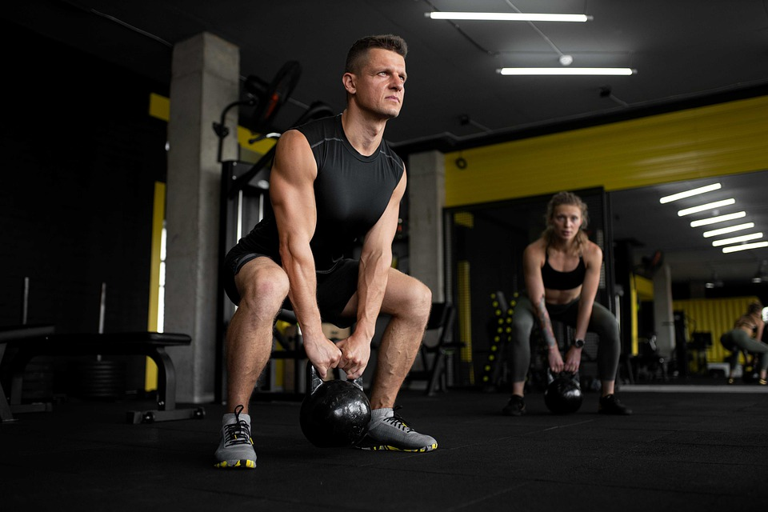
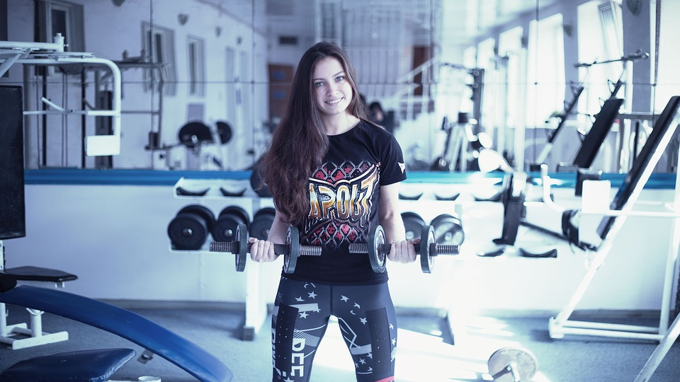
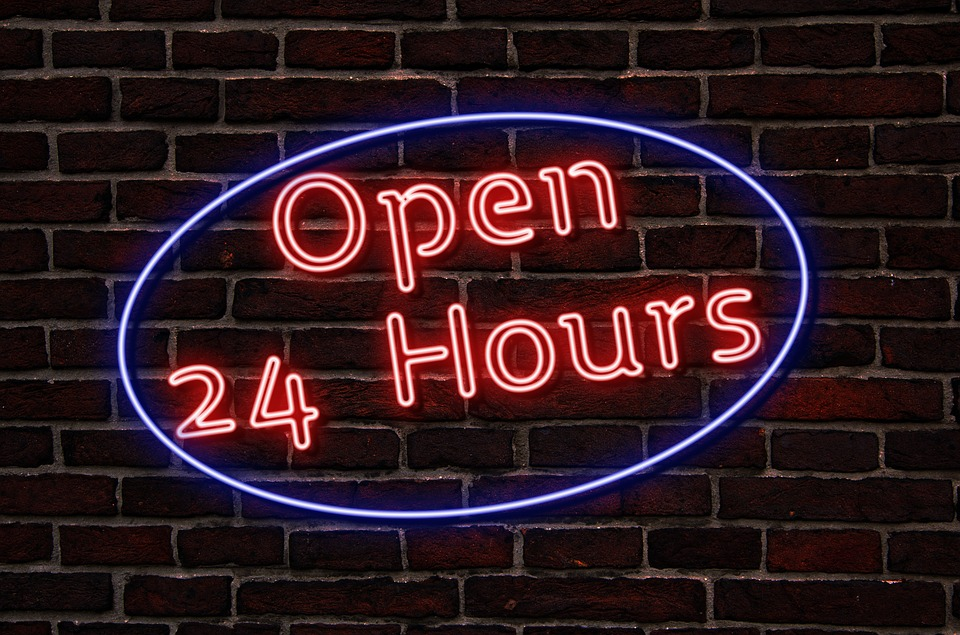

We train athletes
ML Strength are Australia's newest brand in health and fitness, with gyms opening throughout the
Brisbane metropolitan area. ML Strength believes fitness comes first and keeping fit and improving your
health is not just a fad - it's a way of life. Whether your goal is weight loss, body building, nutrition or diet
improvements, having more energy, or just looking and feeling better - we're here for you!

Best in class services
ML Strength can offer cutting edge exercise options, including group fitness classes and one-on-one
personal training sessions for weight loss, circuit training, boxing and karate. Our trainers are all Les
Mills accredited instructors and are second to none – all have Bachelor Degrees in Human Movements.
No Obligation, No Pressure
We are a family operated business that has little to do with the rest of the fitness industry. Our gym world
does not include the annoying telemarketers or membership consultants. Our gyms speak for
themselves, our members do our marketing. We believe that word of mouth has way more credibility
than something that a marketing machine dreams up. You are always welcome to look through any of
our gyms at your own pace, with no pressure whatsoever. With hard-selling 'health club' sales
consultants hustling you on every corner, we pride ourselves on being a refreshing change from that.
Our 'no obligation, no pressure' attitude is clearly evident with our $10 CASUAL visit rate.


Open 24 x 7
We have created gyms that we would love to train in and share that passion and enthusiasm with our
valued members. Our gyms have an old school feel with a new school attitude!
We are open 24:7. YOU can now train any time you like, weekdays, weekends & public holidays. WE
ARE OPEN! Unlike other so called 24:7 gyms, we are staffed all the time. If you need a late night
workout, a protein bar or shake, supplements or a cool t-shirt, we are open for you. Our class times
change constantly so check out on the web site for the timetable at each of our clubs.